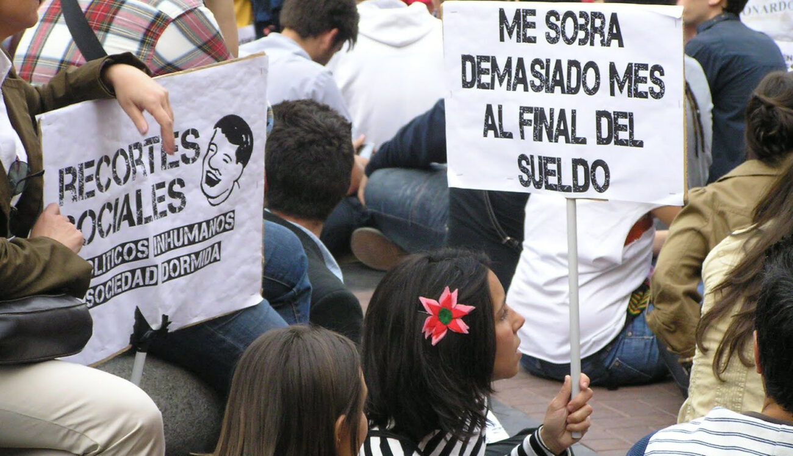

El Cambio
Se puede cambiar el sistema?
Considero que es desalentador ver los datos reales de acerca de el mundo, pero no oldidemos que la
gente asi pensaba de la burguesia y en su punto mas alto fue cuando se desmorono
asi que puede que estemos apunto de un cambio radical en el mundo asi como acaba de sucedere en
china, tengo solo la esperanza de eso, supongo que es lo unico que me queda.
Dignidad
"De lo unico que podemos ser libres es de la ignorancia"
Esperanza
Ya vimos que se debe ser optimista, nos queda tener en cuenta estos temas y saber lo que es verdad o
al menos lo que se acerca a ellla, siempre ser fiel a nuestros principios y valores
siempre tenemos esa responsabilidad ante nosostros mismos de ser realistas pero un poco de
ingenuidad siempre esta bien, criticar para mejorar, quejarse para mejorar, y talvez en unos años
tengamos algo de libertad y dignidad verdadera. Solo nos queda la esperanza.